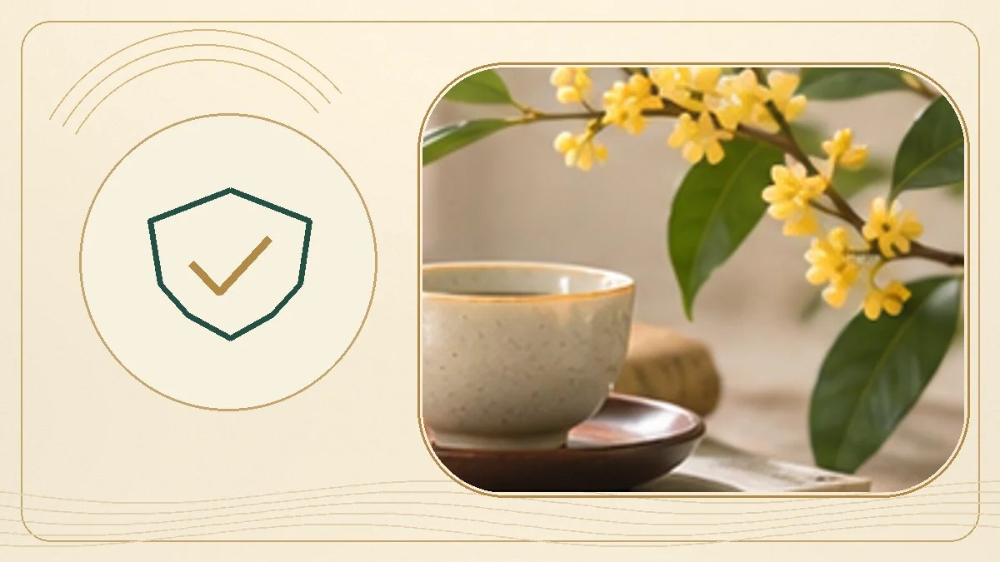

JIANG MERIDIAN WELLNESS JOURNAL
從東方經絡文化、手技接觸與生活習慣，認識日常放鬆的不同面向。找到一篇適合今天的閱讀。
共14篇文章
以下為全部14篇文章；不啟用 JavaScript 仍可閱讀。
專題 05 · 東方經絡文化
從歷史脈絡理解經絡語彙，分辨文化傳承、現代身體知識及日常放鬆的不同角色。
專題 06 · 按摩手技知識
用接觸範圍、動作方向與節奏辨識四式手技，並理解服務前如何溝通偏好。
專題 07 · 按摩手技知識
力道不是品質分數。了解如何描述感受、確認同意，以及為何不必忍受疼痛。
專題 08 · 按摩手技知識
從接觸面積與主觀感受理解手掌、指腹的差異，不涉及穴位施力教學。
專題 09 · 身體部位保養
從工作間隙、鞋履及下班後的休息著手，建立可持續的腿足照顧習慣。
專題 10 · 生活姿態與活動
讓手機使用、姿勢變換與短暫離開螢幕成為容易實行的生活節奏。
專題 11 · 生活姿態與活動
以行車安全為先，規劃途中休息、抵達後的活動與返程安排。
專題 12 · 身體部位保養
以工作環境與休息節點為核心，讓腰背日常照顧不必等到一天結束。
專題 13 · 芳香文化與空間
從植物、木質、光線、通風及個人喜好認識東方空間，不涉及精油療效或配方。
專題 14 · 服務安全與預約
了解知情同意、遮蓋、停止要求及預約前應確認的事項。
專題 01 · 東方經絡文化
經絡是傳統東方身體觀念中的術語；現代民俗調理的服務定位與醫療行為不同。
專題 02 · 生活姿態與活動
把短暫的起身、休息與活動放進一天，不必等到工作全部結束。
專題 03 · 日常養生習慣
充足睡眠、均衡飲食、規律活動與安排休息，是可以逐步實踐的生活基礎。

專題 04 · 服務安全與預約
從預約、隱私、接觸範圍與力道溝通開始，建立清楚的服務期待。
沒有符合的文章，請試試其他關鍵字或選擇全部分類。
知識中心以傳統文化、一般生活保養與非醫療性服務界線為主，現有14篇圖文。新內容由 AI 協助編輯，尚待江老師本人核定，不是本人親筆或已審閱的聲明。圖片為 AI 影像與原創圖形示意。若有身體不適，請尋求正規醫療評估。
官方資訊入口：衛福部民俗調理、國民健康署。